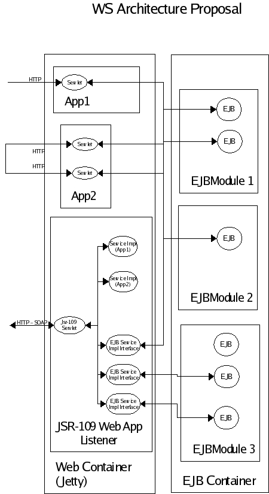
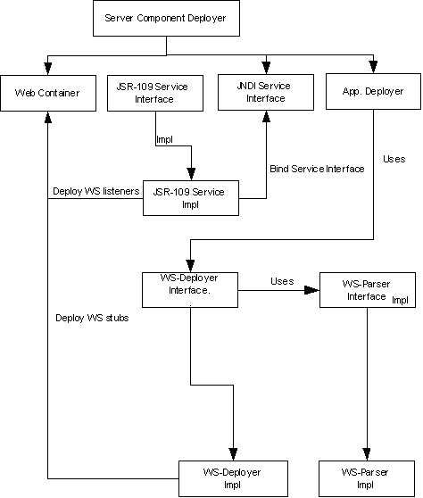

The geronimo – JSR-109 Service Impl integration basically consists in the definition of a deployment architecture that defines the way how web services are implemented in Geronimo server and a set of interfaces that will be used by classes responsible for the ws's deployment..
The architecture proposal consist in:
A servlet listener that will wait for soap calls. This servlet provide by Axis will act as a JAX-RPC handler and will be in charge to dispatch request either to POJOs or EJBs.
The Axis webapp will be deployed at startup. Or if It's possible as soon as JAX-RPC handler is need.
There will be only one web-app where will reside the listeners and impl for the web ws, and the proxys to call the ejb service impl.
- Deployment
We will extend existing module in charge of WAR and EJB-JAR deployment, to take into consideration specific ws deployment files.
A service provided by the JSR-109 team will be used for the parsing of files descriptor related to ws like webservice.xml. If we deployed the Axis webapp the first time a JAX-RPC handler is need, we will trigger an event that will do it
Once the parsing is done the binding in JNDI will occur.
Then the service endpoint implementation given to axis. We will use Axis's integration facilities to register each ws in Axis's servlet.
The figure shows the ws deployent architecture defined for our proposal.

This figure shows the behavior of our proposal during deployment of apps.

Our concerns.
1. We have to be sure that the service has started after the web container, because our service depends on it. How do we manage dependencies. ?
2. Is it possible to have more than one listener (JAX-RPC handler) ?